청소년상담사-2급(1교시) (2022-10-08 기출문제)
1과목: 청소년 상담의 이론과 실제
1. 비자발적인 청소년 내담자에 대한 상담 개입으로 옳지 않은 것은?
- 내담자가 인지하고 있는 상담 신청 경위를 탐색한다.
- 원치 않음에도 상담에 오게 된 내담자의 마음을 수용하고 공감한다.
- 상담자 역할에 대해 알려주고, 상담과정과 비밀 보장 등에 대해 설명한다.
- 내담자가 하는 말의 진위 여부를 확인하는 데 초점을 맞춘다.
- 상담이 내담자의 심리적 어려움을 해소할 수 있도록 돕는 것임을 전달한다.
(정답률: 알수없음)

2. 상담의 초기 단계에 이루어지는 내용으로 옳은 것을 모두 고른 것은?
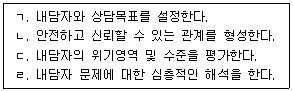
- ㄱ, ㄴ
- ㄱ, ㄷ
- ㄱ, ㄴ, ㄷ
- ㄴ, ㄷ, ㄹ
- ㄱ, ㄴ, ㄷ, ㄹ
(정답률: 알수없음)
3. 상담이론과 기법의 연결이 옳은 것은?
- 현실치료 - 직면, 해석, 역할연기
- 인지치료 - ABC 기법, 생활양식분석
- 교류분석 - 유머사용하기, 역설적 기법
- 개인심리학 - 단추누르기, 마치∼처럼 행동하기
- 게슈탈트 상담 - 문제를 외현화하기, 과제부여
(정답률: 알수없음)
4. 분석심리학에 관한 설명으로 옳지 않은 것은?
- 단어연상검사, 꿈 분석, 증상 분석 등의 기법을 사용한다.
- 고백단계에서 내담자의 무의식적 의미를 해석하고 통찰을 촉진한다.
- 외향적 사고와 내향적 사고는 대립되는 것이 아니라 상보적이다.
- 억압된 기억이나 사고, 감정은 개인 무의식에 저장된다.
- 중년기 이후에는 자기의 방향이 내부로 향하여 자아는 다시 자기에 통합되면서 성격 발달이 이루어진다.
(정답률: 알수없음)
5. 다음에서 설명하는 상담이론은?
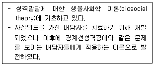
- 중다양식치료
- 구성주의치료
- 대상관계치료
- 수용전념치료
- 변증법적 행동치료
(정답률: 알수없음)
6. 청소년 문제에 관한 설명으로 옳지 않은 것은?
- 생물학적 변화로 인해 발달심리적 위기를 겪는다.
- 외현화 문제에는 일탈, 약물남용, 섭식장애, 자살 등이 있다.
- 우울감이 높은 청소년은 인터넷이나 스마트폰에 중독될 가능성이 높다.
- 학교폭력에는 사이버 따돌림과 음란 정보에 의해 정신적 피해를 주는 경우도 해당된다.
- 청소년 비행은 폭력이나 절도와 같은 심각한 범죄 뿐만 아니라 음주, 흡연 등과 같은 일탈행동도 포함한다.
(정답률: 알수없음)
7. 아들러(A. Adler)의 개인심리학에 관한 설명으로 옳지 않은 것은?
- 일차적 열등감은 목표와 성취를 위한 기초가 된다.
- 가상적 목표는 바이힝거(H. Vaihinger)의 영향을 받은 것이다.
- 인간은 완전함을 향해 나아가는 전체론적인 존재이다.
- 생활양식은 개인의 일관된 성격구조로 생애초기에 형성된다.
- 개인은 사회적 관심과 활동수준에 따라 지배형, 기생형, 분리형, 사회적 유용형으로 나뉜다.
(정답률: 알수없음)
8. 상담 종결 단계에서 이루어지는 내용으로 옳은 것을 모두 고른 것은?
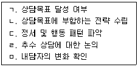
- ㄱ, ㄴ
- ㄱ, ㄴ, ㄹ
- ㄱ, ㄹ, ㅁ
- ㄴ, ㄷ, ㅁ
- ㄱ, ㄴ, ㄹ, ㅁ
(정답률: 알수없음)
9. 행동주의 상담 기법에 관한 설명으로 옳지 않은 것은?
- 이완훈련은 불안이나 스트레스를 겪고 있는 내담자에게 적용한다.
- 토큰강화는 프리맥(Premack)의 원리를 적용한 기법이다.
- 체계적 둔감화는 상호억제 기제를 사용하여 불안이나 공포를 감소시키는 데 사용한다.
- 노출 및 반응방지법은 내담자가 두려워하는 자극에 노출시키되 강박행동을 하지 못하게 하는 기법이다.
- 행동조형(shaping)은 목표행동에 접근하는 반응을 강화하여 새로운 행동을 단계적으로 습득하게 한다.
(정답률: 알수없음)
10. 자살 사고가 있으나 부모에게 이 사실을 알리는 것을 꺼려하는 청소년에 대한 상담자의 개입으로 옳지 않은 것은?
- 비밀유지 예외상황에 대해 고지한다.
- 부모에게 알리고 싶지 않은 이유를 탐색한다.
- 죽음을 생각할 만큼 힘든 내담자의 마음을 공감한다.
- 자살을 생각하게 된 어려움이 무엇인지 구체적으로 살펴본다.
- 부모에게 자살 사고 사실을 알려야 한다고 내담자를 밀어붙이거나 설득한다.
(정답률: 알수없음)
11. 다음 사례에 해당하는 상담기법에 관한 설명으로 옳은 것은?
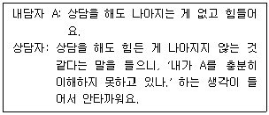
- 상담 주제나 초점을 이동하고자 할 때 사용한다.
- 현재형으로 진술하여 지금-여기의 경험을 드러낸다.
- 내담자가 모호한 진술을 정리하고 지각할 수 있게 해준다.
- 단정적으로 표현하기보다는 잠정적 가설의 형태로 제시한다.
- 문제해결을 위한 대안을 발굴하고 평가하는 기회를 제공한다.
(정답률: 알수없음)
12. 상담기법에 관한 설명으로 옳지 않은 것은?
- 명료화는 내담자의 사고, 감정, 행동에 있는 불일치나 모순을 드러내는 것이다.
- 자기개방은 상담자의 개인적 생각이나 경험을 내담자와 나누는 것이다.
- 반영은 내담자의 메시지 이면에 있는 감정을 표면적으로 드러내는 것이다.
- 은유는 비유나 동화 형태로 제시하며, 내담자의 자기인식을 돕고 문제를 재구성하도록 한다.
- 재진술은 내담자의 메시지에 표현된 핵심내용을 상담자의 언어로 바꾸어 말하는 것이다.
(정답률: 알수없음)
13. 다음 해결중심상담의 질문기법으로 옳은 것은?
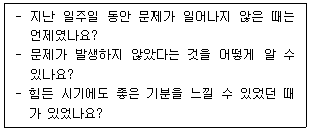
- 대처
- 예외
- 변화
- 기적
- 관계
(정답률: 알수없음)
14. 청소년상담자의 자질이 아닌 것은?
- 상담이론에 대한 이해
- 인간에 대한 깊은 관심
- 자신과 타인의 감정이해
- 전문적인 상담용어 사용
- 상담 윤리강령의 숙지
(정답률: 알수없음)
15. 매체상담에 관한 설명으로 옳지 않은 것은?
- 대면상담과 마찬가지로 사이버상담에서도 관계형성 및 구조화는 중요하다.
- 사이버상담 유형 중 채팅상담은 내담자와 동시적인 상호작용이 가능하다.
- 화상상담은 정신병리 문제나 자살 및 자해 등 고위기 내담자에게 적합하다.
- 전화상담은 문제해결 중심으로 진행되며 대면상담으로 연계하는 역할을 한다.
- 전화상담은 위기 상황에 처한 청소년에게 즉각적인 도움을 제공할 수 있다.
(정답률: 알수없음)
16. 다음 설명에 해당하는 인간중심상담의 기법은?
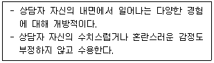
- 진솔성
- 공감적 이해
- 알아차리기
- 탈숙고하기
- 무조건적 긍정적 존중
(정답률: 알수없음)
17. 청소년 상담자의 태도로 옳은 것은?
- 상담자가 선호하는 상담 이론에 내담자를 맞춰서 상담을 진행하였다.
- 내담자는 원하지 않았으나 내담자를 이해하기 위해 첫 회 상담 후 그림검사를 실시하였다.
- 활용하고자 하는 특정 기법에 대한 내담자의 전형적인 반응을 감지하고 대응하고자 하였다.
- 내담자의 연령과 발달수준을 고려하여 매 회기 대부분의 시간을 게임에 할애 하였다.
- 모든 청소년 내담자의 부모를 상담에 초대하여 부모상담을 진행하였다.
(정답률: 알수없음)
18. 다음 각 내담자에 해당하는 접촉경계장애의 유형을 옳게 나열한 것은?
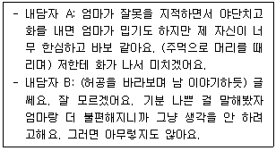
- A: 반전, B: 편향
- A: 융합, B: 반전
- A: 내사, B: 편향
- A: 반전, B: 내사
- A: 내사, B: 융합
(정답률: 알수없음)
19. 청소년상담사 윤리강령에 명시된 '전문가로서의 책임'에 해당하는 것은?
- 검증되지 않고 훈련받지 않은 상담기법의 오ㆍ남용을 하지 않는다.
- 법적ㆍ도덕적 한계를 벗어난 다중관계를 맺지 않는다.
- 청소년 내담자에게 무력이나 정신적 압력 등을 사용하지 않는다.
- 내담자의 복지를 증진하고 존엄성을 존중하는 것에 최우선 가치를 둔다.
- 상담과정을 사례지도에 활용할 경우 내담자가 거부할 권리가 있음을 알린다.
(정답률: 알수없음)
20. 지역사회청소년통합지원체계(CYS-Net) 필수연계 기관으로 옳은 것을 모두 고른 것은?
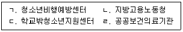
- ㄱ, ㄴ
- ㄱ, ㄷ
- ㄷ, ㄹ
- ㄱ, ㄷ, ㄹ
- ㄱ, ㄴ, ㄷ, ㄹ
(정답률: 알수없음)
21. 합리정서행동상담의 인지적 기법으로 옳지 않은 것은?
- 언어 변화시키기
- 인지적 과제 수행하기
- 비합리적 신념 논박하기
- 자조서(self-help book) 읽기
- 자기표현 훈련하기
(정답률: 알수없음)
22. 다음 사례에 해당하는 인지 왜곡은?
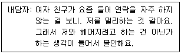
- 개인화
- 흑백논리
- 극대화
- 임의적 추론
- 과잉일반화
(정답률: 알수없음)
23. 해결중심상담에 관한 설명으로 옳은 것을 모두 고른 것은?
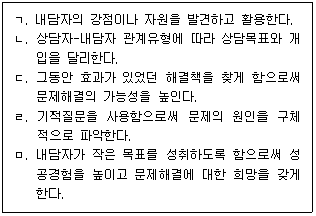
- ㄱ, ㄴ
- ㄱ, ㄴ, ㄷ
- ㄷ, ㄹ, ㅁ
- ㄱ, ㄴ, ㄷ, ㅁ
- ㄴ, ㄷ, ㄹ, ㅁ
(정답률: 알수없음)
24. 다음의 상담자 질문에 해당하는 현실치료의 상담과정으로 옳은 것은?
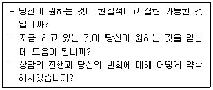
- 현재의 행동 파악하기
- 바람, 욕구, 지각 탐색하기
- 바람, 행동, 계획 평가하기
- 행동 계획과 실천하기
- 선택과 책임감 갖기
(정답률: 알수없음)
25. 교류분석에 관한 설명으로 옳지 않은 것은?
- 상담목표는 내담자의 인생각본에 대한 인식과 재결단을 돕는 것이다.
- 교차적 교류는 상대방의 자아 상태와는 다른 자아 상태로 교류하는 것이다.
- 상담은 교류분석-구조분석-게임분석-각본분석의 단계를 거친다.
- 자기부정ㆍ타인긍정(I'm not OK, You're OK)의 생활자세를 지닌 사람은 열등감과 우울감, 무력감을 경험한다.
- 성인자아 상태는 현실에 근거하여 문제를 해결하며, 부모자아 상태와 어린이자아 상태를 중재한다.
(정답률: 알수없음)
2과목: 상담연구방법론의 기초
26. 다음에서 설명하고 있는 것은?
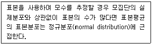
- 베이즈정리(Bayes' theorem)
- 중심극한정리(central limit theorem)
- 베르누이시행(Bernoulli trial)
- 구간추정(interval estimation)
- 유의수준(level of significance)결정
(정답률: 알수없음)
27. 척도에 관한 설명으로 옳지 않은 것은?
- 명목척도로 측정된 표본은 한 집단에 속하면 다른 집단에 속하지 않는 상호배타적(mutually exclusive) 특성을 가지고 있다.
- 명목척도로 측정된 점수를 토대로 이항분포 검증과 같은 통계분석이 가능하다.
- 서열척도로 측정된 점수를 토대로 변동계수 계산과 같은 통계분석이 가능하다.
- 등간척도로 측정된 점수를 토대로 표준편차 계산과 같은 통계분석이 가능하다.
- 비율척도에서는 0의 의미를 자의적으로 해석할 수 없다.
(정답률: 알수없음)
28. 양적연구에 관한 내용으로 옳은 것을 모두 고른 것은?
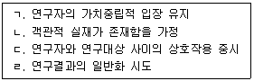
- ㄱ, ㄴ
- ㄷ, ㄹ
- ㄱ, ㄴ, ㄹ
- ㄱ, ㄷ, ㄹ
- ㄴ, ㄷ, ㄹ
(정답률: 알수없음)
29. 다음 중 비확률표집이 아닌 것은?
- 군집표집(cluster sampling)
- 할당표집(quota sampling)
- 편의표집(convenience sampling)
- 눈덩이표집(snowball sampling)
- 판단표집(judgement sampling)
(정답률: 알수없음)
30. 경험적으로 관찰된 개별 사례나 현상에 근거하여 일반적인 사실을 추론하고 이를 토대로 이론을 구성하는 방법은?
- 귀납법
- 연역법
- 실험법
- 기술적 연구법
- 탐색적 연구법
(정답률: 알수없음)
31. 모집단으로부터 표본 추출 시 표본의 크기(수)를 결정하는데 영향을 미치는 요인을 모두 고른 것은?
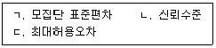
- ㄱ
- ㄴ
- ㄱ, ㄷ
- ㄴ, ㄷ
- ㄱ, ㄴ, ㄷ
(정답률: 알수없음)
32. 근거 이론에 관한 설명으로 옳지 않은 것은?
- 상징적 상호작용이론에 기초하고 있다.
- 개인이나 집단의 행동, 신념 등의 현상을 탐색하는데 관심을 둔다.
- 자료 수집은 포화(saturation)된 수준에 이를 때까지 진행된다.
- 지속적 비교 방법(constant comparative method)이 주된 분석방법이다.
- 주로 기존의 이론적 체계나 선행연구에 근거해서 수행된다.
(정답률: 알수없음)
33. 추상적 개념을 실증적으로 검증하기 위해 변수를 측정 가능한 형태로 계량화하는 것은?
- 개념적 정의
- 조작적 정의
- 의존성 정의
- 전이가능성 정의
- 확증가능성 정의
(정답률: 알수없음)
34. 좋은 가설에 관한 설명으로 옳지 않은 것은?
- 경험적으로 검증 가능할 수 있어야 한다.
- 논리적으로 명료해야 한다.
- 간결하게 표현되어야 한다.
- 개념이 동의반복(tautological)적 이어야 한다.
- 자명한 관계에 대한 가설 설정을 지양한다.
(정답률: 알수없음)
35. 다음에서 설명하는 현상학적 개념은?
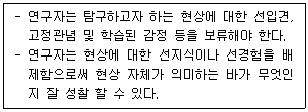
- 수평화(horizonalization)
- 의식의 지향성(intentionality of consciousness)
- 상상적 변형(imaginative variation)
- 괄호치기(bracketing)
- 의미군(cluster of meaning)
(정답률: 알수없음)
36. 다음 연구에 관한 설명으로 옳지 않은 것은?
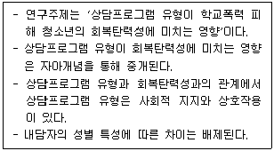
- 상담프로그램 유형은 독립변인이다.
- 회복탄력성은 종속변인이다.
- 자아개념은 잠재변인이다.
- 사회적 지지는 조절변인이다.
- 성별 특성은 통제변인이다.
(정답률: 알수없음)
37. 영가설(H0)이 참이 아닐 경우 이를 기각함으로써 올바른 결정을 내릴 가능성을 나타내는 통계적 검정력은?
- α
- β
- 1 - α
- 1 - β
- α - β
(정답률: 알수없음)
38. 내적타당도가 저해될 수 있는 상황을 모두 고른 것은?
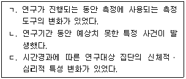
- ㄱ
- ㄱ, ㄴ
- ㄱ, ㄷ
- ㄴ, ㄷ
- ㄱ, ㄴ, ㄷ
(정답률: 알수없음)
39. 타당도와 신뢰도에 관한 설명으로 옳지 않은 것은?
- 타당도는 연구의 방법 또는 절차의 결과가 실제로 의도한 목적과 일치하는 정도이다.
- 신뢰도는 연구의 방법 또는 절차의 결과가 각각의 측정에서 일치하는 정도이다.
- 타당도와 신뢰도는 연구계획, 측정, 측정도구 사용에 있어서 상호연관성이 있을 수 있다.
- 무작위 오차는 신뢰도와 관련이 있고, 체계적 오차는 타당도와 관련이 있다.
- 측정도구 선택에 있어서 타당도보다는 신뢰도가 중요하다.
(정답률: 알수없음)
40. 등간척도이지만 비율척도가 아닌 측정치는?
- 온도: 36.5℃
- 학급석차: 5위
- 성별: 여성
- 나이: 35세
- 체중: 55㎏
(정답률: 알수없음)
41. 신뢰도의 추정을 위한 측정방법이 아닌 것은?
- 재검사(test-retest)
- 동형검사(parallel-form)
- 반분(split-half)
- 이중맹검(double-blind)
- 내적 일관성(internal-consistency)
(정답률: 알수없음)
42. 외적타당도에 관한 설명으로 옳지 않은 것은?
- 연구결과를 일반화 시킬 수 있는 정도이다.
- 무선표집은 외적타당도의 저해요인이다.
- 외적타당도를 높이기 위해서는 표본의 대표성을 높여야한다.
- 연구결과의 이용을 위해 내적타당도와 함께 고려해야 할 요소이다.
- 연구결과의 적용 대상, 시점, 환경의 확장과 관련이 있다.
(정답률: 알수없음)
43. 연구재료, 장비, 과정 등을 인위적으로 조작하거나 연구자료를 임의로 변형, 삭제함으로써 연구 내용 또는 결과를 왜곡하는 연구부정행위는?
- 위조
- 변조
- 표절
- 부당한 저자표시
- 이중게재
(정답률: 알수없음)
44. 설문문항이 6개이고, 각 문항 측정치들 사이의 상관계수들의 평균이 0.8일 때, 크론바하 알파(Cronbach's alpha)값은?
- 0.02
- 0.04
- 0.8
- 0.96
- 0.98
(정답률: 알수없음)
45. 모집단으로부터 표본을 25개씩 복원 반복 추출하여 얻은 평균의 표준오차(standard error of the mean)가 2일 때, 이 표준오차를 1로 줄이기 위한 표집의 크기는?
- 10
- 40
- 100
- 400
- 1,000
(정답률: 알수없음)
46. 혼합연구방법에 관한 설명으로 옳지 않은 것은?
- 질적연구방법과 양적연구방법을 결합한 연구방법이다.
- 미숙련 연구자에게 적합한 연구방법이다.
- 현상에 대한 이해를 넓히고 깊이 있는 연구가 가능하다.
- 내재된 편향이나 결함을 피하고, 타당도를 높일 수 있다.
- 다양한 형태의 자료들을 수집하고 분석하는데 유연하다.
(정답률: 알수없음)
47. 다음 설명에 모두 해당하는 연구방법은?
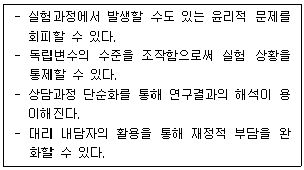
- 단일사례연구
- 상관연구
- 모의상담연구
- 메타분석연구
- 횡단연구
(정답률: 알수없음)
48. 상담연구에서 단일사례연구설계(단일피험자설계, single-case research design)에 관한설명으로 옳지 않은 것은?
- 임상적 유의미성 보다는 통계적 검증을 중시한다.
- 한 개인 또는 집단을 상대로 연구대상 내 차이를 분석하여 처치효과를 추정한다.
- 연구를 진행하면서 연구설계나 연구절차도 융통성 있게 수정할 수 있다.
- ABAB설계(reversal design)와 다중기저선설계(multiple-baseline design) 등이 있다.
- 연구결과의 일반화 가능성에 제약이 있다.
(정답률: 알수없음)
49. 명목변인을 대상으로 하는 연구에 적합한 집중경향(central tendency) 측정치는?
- 산술평균값
- 조화평균값
- 기하평균값
- 중앙값
- 최빈값
(정답률: 알수없음)
50. 비교집단과 무선할당을 모두 사용하는 실험설계는?
- 원시실험설계(pre-experimental design)
- 비동일통제집단설계(nonequivalent control group design)
- 진실험설계(true experimental design)
- 다중시계열설계(multiple time-series design)
- 준실험설계(quasi-experimental design)
(정답률: 알수없음)
3과목: 심리측정 평가의 활용
51. 심리검사의 신뢰도와 타당도에 관한 설명으로 옳은 것은?
- 검사의 문항이 많을수록 신뢰도는 낮아진다.
- 측정의 표준오차 값이 클수록 신뢰도는 높아진다.
- 예측타당도는 준거타당도의 한 종류이다.
- 검사점수와 준거변인의 상관이 낮을수록 공인타당도가 높아진다.
- 타당도를 측정하는 한 방법은 크론바하 알파(Cronbach's alpha) 지수를 알아보는 것이다.
(정답률: 알수없음)
52. MMPI-2에서 성격병리 5요인 척도(PSY-5)의 공격성 척도(AGGR)가 T점수 65이상일 때 보이는 특징으로 옳지 않은 것은?
- 언어적 혹은 신체적으로 공격적이다.
- 다른 사람을 위협하는 것을 즐긴다.
- 상담 중에 상담자를 통제하려고 노력한다.
- 다른 사람을 지배하기 위해 폭력을 사용한다.
- 다른 사람에게 없는 이상한 감각 혹은 지각적 경험을 한다.
(정답률: 알수없음)
53. 심리검사에 관한 설명으로 옳지 않은 것은?
- 검사상황변인은 결과에 영향을 미치지 않는다.
- 심리적 구성개념을 측정하기 위한 도구이다.
- 개인의 행동을 예측하는 것이 목적의 하나이다.
- 투사적 검사에서는 자유로운 반응이 허용된다.
- 표준화 검사와 비표준화 검사가 있다.
(정답률: 알수없음)
54. K-WAIS-IV에 관한 설명으로 옳은 것은?
- 총 16개의 소검사로 구성되어 있다.
- 전체지능지수(FSIQ)는 하위 여섯 가지 지수점수로 산출된다.
- 작업기억 지수(WMI)는 비언어적 문제를 해결할 때 요구되는 정신적 속도 및 운동 속도를 반영한다.
- 지우기는 언어이해 지수(VCI)의 보충 소검사이다.
- 언어이해 지수(VCI)는 문화적 여건의 영향을 많이 받는다.
(정답률: 알수없음)
55. 주제통각검사(TAT)에 관한 설명으로 옳지 않은 것은?
- 모든 수검자에게 같은 지시문을 제시한다.
- 두 번으로 나누어 검사를 실시할 수 있다.
- 성취욕구는 도판1의 일반적인 주제의 하나이다.
- 욕구-압력 분석법의 첫 단계는 주인공을 찾는 것이다.
- 통각은 객관적 자극과 주관적 경험의 상호작용으로 만들어진다.
(정답률: 알수없음)
56. 심리평가를 구성하는 요인을 모두 고른 것은?
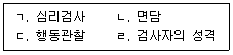
- ㄱ, ㄴ
- ㄷ, ㄹ
- ㄱ, ㄴ, ㄷ
- ㄴ, ㄷ, ㄹ
- ㄱ, ㄴ, ㄷ, ㄹ
(정답률: 알수없음)
57. HTP검사에 관한 설명으로 옳은 것은?
- 기호 채점 절차를 거쳐 해석한다.
- 집-나무-사람 순서로 그리게 한다.
- 각 그림마다 그리는 시간이 정해져 있다.
- 집을 그릴 때는 수검자에게 세로로 종이를 제시한다.
- 사람을 그릴 때는 수검자와 같은 성(性)을 먼저 그리도록 지시한다.
(정답률: 알수없음)
58. 심리검사를 실시할 때 가장 적절한 선택은?
- 직업흥미 평가를 위해 K-ABC검사를 실시한다.
- 자폐스펙트럼장애 평가를 위해 BGT검사를 실시한다.
- 지능 평가를 위해 MMPI-2검사를 실시한다.
- 적응장애 평가를 위해 MBTI검사를 실시한다.
- 우울감 평가를 위해 BDI검사를 실시한다.
(정답률: 알수없음)
59. K-WAIS-IV 검사의 처리속도 지수(PSI)에 해당하는 소검사로만 나열된 것은?
- 공통성, 어휘, 퍼즐
- 이해, 행렬추리, 산수
- 숫자, 빠진 곳 찾기, 무게비교
- 동형찾기, 기호쓰기, 지우기
- 기호쓰기, 순서화, 토막짜기
(정답률: 알수없음)
60. 심리평가 보고서에 관한 설명으로 옳지 않은 것은?
- 치료적 개입방법을 제시한다.
- 의뢰사유에 대해 명확한 답을 제공한다.
- 수집된 다양한 자료를 조직화하여 통합한다.
- 검사자의 전문적이고 추상적인 용어로 작성한다.
- 행동관찰을 기술할 때에는 수검자의 구체적이고 독특한 인상에 초점을 맞춘다.
(정답률: 알수없음)
61. 다음 설명에 해당하는 MMPI-2의 유의미한 상승 척도 쌍으로 옳은 것은?
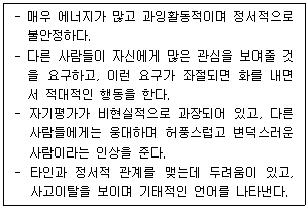
- 12/21
- 23/32
- 49/94
- 68/86
- 89/98
(정답률: 알수없음)
62. BGT에서 허트(M. Hutt)의 임상적 해석상 기질적 뇌장애와 가장 밀접한 관련이 있는 것은?
- 폐쇄곤란
- 교차곤란
- 용지회전
- 중복곤란
- 지각적 회전
(정답률: 알수없음)
63. T 점수가 40일 때 이에 해당하는 Z 점수는?
- -3
- -1
- 0
- 1
- 2
(정답률: 알수없음)
64. 심리검사의 제작에 있어서 경험적 접근방식을 사용한 심리검사는?
- MBTI
- K-WAIS
- TCI
- MMPI
- TAT
(정답률: 알수없음)
65. 성인을 대상으로 한 심리검사로 옳은 것을 모두 고른 것은?
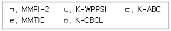
- ㄱ
- ㄱ, ㄹ
- ㄴ, ㄷ, ㄹ
- ㄱ, ㄷ, ㄹ, ㅁ
- ㄱ, ㄴ, ㄷ, ㄹ, ㅁ
(정답률: 알수없음)
66. K-WISC-IV 검사 중에서 시간제한이 있는 검사가 아닌 것은?
- 산수
- 숫자
- 선택
- 기호쓰기
- 빠진 곳 찾기
(정답률: 알수없음)
67. K-WAIS-IV의 핵심 및 보충 소검사에 관한 설명으로 옳은 것을 모두 고른 것은?
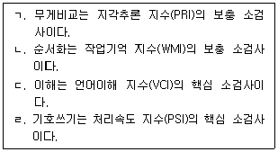
- ㄱ, ㄹ
- ㄴ, ㄷ
- ㄱ, ㄴ, ㄹ
- ㄴ, ㄷ, ㄹ
- ㄱ, ㄴ, ㄷ, ㄹ
(정답률: 알수없음)
68. PAI의 치료(고려) 척도에 해당하지 않는 것은?
- RXR(치료거부 척도)
- SUI(자살관념 척도)
- STR(스트레스 척도)
- TRT(치료예측 척도)
- NON(비지지 척도)
(정답률: 알수없음)
69. 정신상태검사(Mental Status Examination)에 포함되는 영역을 모두 고른 것은?
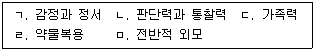
- ㄱ, ㄴ, ㄷ
- ㄱ, ㄴ, ㅁ
- ㄴ, ㄷ, ㄹ
- ㄷ, ㄹ, ㅁ
- ㄱ, ㄴ, ㄷ, ㄹ, ㅁ
(정답률: 알수없음)
70. 다음 사례에서 상승이 예측되는 MMPI-2의 보충척도는?
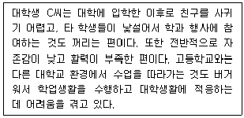
- MDS
- Re
- Do
- Es
- Mt
(정답률: 알수없음)
71. 다음 사례에서 P씨의 특징을 반영하는 심리검사 결과로 적절한 것을 보기에서 모두 고른 것은?
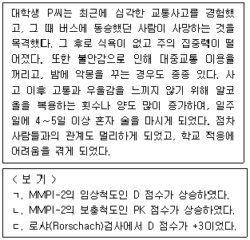
- ㄱ
- ㄴ
- ㄱ, ㄴ
- ㄴ, ㄷ
- ㄱ, ㄴ, ㄷ
(정답률: 알수없음)
72. 로샤(Rorschach)검사에서 수검자가 반점들에 대해 “곤충의 얼굴과 황소의 얼굴이 겹쳐서 보이니까 곤충황소”라고 반응했을 때 특수지표(점수)의 채점 기호로 옳은 것은?
- AG(aggressive movement)
- ALOG(inappropriate logic)
- CONTAM(contamination)
- INCOM(incongruous combination)
- FABCOM(fabulized combination)
(정답률: 알수없음)
73. 주제통각검사(TAT)의 실시와 해석에 관한 설명으로 옳은 것은?
- TAT를 실시할 때 각 개인은 30장의 그림을 보게 된다.
- 모든 수검자에게 적용되는 공통카드는 20장이다.
- TAT는 40장의 컬러카드와 1장의 백지카드로 구성된다.
- 검사 결과의 해석은 심리적 결정론(Psychic Determinism)을 전제한다.
- 카드 뒷면에 “B”라고 적힌 경우는 성인 여성에게 제시되는 카드를 의미한다.
(정답률: 알수없음)
74. K-WISC-IV의 실시와 채점에 관한 설명으로 옳지 않은 것은?
- 숫자 소검사의 경우, 수검자의 요청 시 문항 당 한 번의 반복만 가능하다.
- 아동의 반응이 불완전하거나 명료하지 않을 경우 검사자가 기록용지에 “Q”라고 기록하며 추가질문을 한다.
- 언어이해 소검사의 경우, 수검자의 응답이 문법에 맞지 않다는 이유로 채점을 불리하게 해서는 안 된다.
- 수검자의 반응을 기록할 때에는 말한 그대로의 내용을 모두 기록해야 한다.
- 기록용지에 “P”라고 작성한 경우는 촉구한 것을 의미한다.
(정답률: 알수없음)
75. 다음의 특성을 모두 포함하는 MMPI-A의 내용척도는?
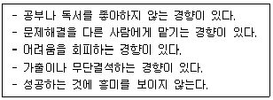
- A-biz
- A-las
- A-sod
- A-fam
- A-lse
(정답률: 알수없음)
4과목: 이상심리
76. DSM-5의 주요 우울장애 진단 기준을 모두 고른 것은?
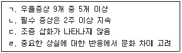
- ㄱ, ㄴ
- ㄷ, ㄹ
- ㄱ, ㄴ, ㄷ
- ㄴ, ㄷ, ㄹ
- ㄱ, ㄴ, ㄷ, ㄹ
(정답률: 알수없음)
77. DSM-5의 망상장애 진단에서 명시된 아형(subtypes)의 특징을 옳게 연결한 것은?
- 피해형 - 망상의 중심주제가 감각이상으로 나타남
- 과대형 - 자신이 굉장한 통찰력을 지녔다고 여김
- 질투형 - 다른 사람이 자신을 사랑하고 있음
- 혼합형 - 자신이 사랑하는 대상에만 한정됨
- 신체형 - 정신약물의 생리적 효과로 나타남
(정답률: 알수없음)
78. 이상심리의 발달모형에 관한 설명으로 옳은 것을 모두 고른 것은?
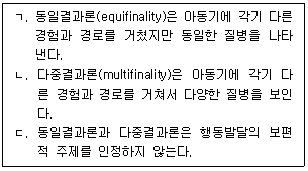
- ㄱ
- ㄱ, ㄴ
- ㄱ, ㄷ
- ㄴ, ㄷ
- ㄱ, ㄴ, ㄷ
(정답률: 알수없음)
79. DSM-5의 불안장애에 속하는 하위진단 범주들을 전형적인 발병 연령 순서대로 옳게 나열한 것은?
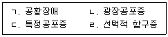
- ㄱ - ㄷ - ㄴ – ㄹ
- ㄴ - ㄱ - ㄹ – ㄷ
- ㄷ - ㄱ - ㄴ - ㄹ
- ㄷ - ㄹ - ㄱ – ㄴ
- ㄹ - ㄷ - ㄱ - ㄴ
(정답률: 알수없음)
80. 이상심리 모델에서 주장하는 것으로 옳지 않은 것은?
- 병적 소인 스트레스: 유전적 성향과 특정 스트레스 상황이 정신장애를 유발
- 인지주의: 이상행동은 사고, 정서, 행동의 핵심인 인지과정에 의해 유발
- 행동주의: 이상행동은 고전적 조건형성, 조작적 조건형성, 모델링 학습의 결과
- 정신역동: 이상심리 기능과 정상심리 기능은 서로 다른 과정에 기반
- 인본주의: 자기실현을 이루게 되면 이상심리의 발현을 낮춤
(정답률: 알수없음)
81. DSM-5의 범불안장애의 증상에 속하지 않는 것은?
- 과민성
- 근육의 긴장
- 사고의 비약
- 쉽게 피로해짐
- 수면 교란
(정답률: 알수없음)
82. DSM-5의 주의력 결핍 및 과잉행동장애(ADHD)에 관한 설명으로 옳지 않은 것은?
- 행동문제가 2가지 이상의 다른 환경에서 나타난다.
- 부주의 또는 과잉행동/충동성 증상 중의 일부는 12세 이전에 나타난다.
- 후기 청소년이나 성인의 경우에 세부 유형의 증상이 5개이어도 해당 된다.
- 주의력 결핍 우세형, 과잉행동/충동 우세형으로 세분화된다.
- 세부 유형의 증상은 각각 최소 6개 영역에서 6개월 동안 부정적 영향이 지속된다.
(정답률: 알수없음)
83. DSM-5의 양극성 관련 장애에 관한 설명으로 옳은 것은?
- 양극성 장애는 모든 연령대에서 발병할 수 있다.
- 순환성 장애는 최소 6개월 이상 경조증과 우울증 기간이 있어야 한다.
- 순환성 장애는 여성의 발병빈도가 높다.
- 제 I 형 양극성 장애는 남성의 발병빈도가 높다.
- 제 II 형 양극성 장애의 자살(자해)시도 빈도는 제 I 형보다 낮다.
(정답률: 알수없음)
84. 조현병 스펙트럼 장애의 음성 증상을 모두 고른 것은?
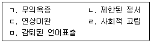
- ㄱ, ㄴ, ㅁ
- ㄴ, ㄷ, ㄹ
- ㄱ, ㄴ, ㄹ, ㅁ
- ㄱ, ㄷ, ㄹ, ㅁ
- ㄱ, ㄴ, ㄷ, ㄹ, ㅁ
(정답률: 알수없음)
85. 이상행동 치료를 위한 단일사례 실험설계에 사용되는 전략들을 모두 고른 것은?
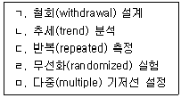
- ㄱ, ㄴ, ㄹ
- ㄴ, ㄷ, ㄹ
- ㄱ, ㄴ, ㄷ, ㅁ
- ㄱ, ㄷ, ㄹ, ㅁ
- ㄴ, ㄷ, ㄹ, ㅁ
(정답률: 알수없음)
86. DSM-5의 사회불안장애에 관한 설명으로 옳지 않은 것은?
- 하나 이상의 사회적 상황에서 공포와 불안을 보인다.
- 아동의 경우 또래집단에서는 공포와 불안을 보이지 않는다.
- 타인의 부정적 평가를 두려워한다.
- 전형적으로 공포, 불안, 회피는 6개월 이상 지속되어야 한다.
- 사회적 또는 직업적 수행영역에서 현저한 고통이나 손상을 초래한다.
(정답률: 알수없음)
87. DSM-5의 신경발달장애에 속하지 않는 것은?
- 지적장애
- 경도 신경인지장애
- 발달성 협응장애
- 말소리 장애
- 특정 학습장애
(정답률: 알수없음)
88. 이상심리의 분류 준거에 관한 설명으로 옳지 않은 것은?
- 개별기술적(idiographic) 접근: 개인 특성의 독특한 측면을 중점적으로 규명
- 차원적(dimensional) 접근: 특정 질병을 연속선에서 기술하고 평가
- 원형적(prototypical) 접근: 특정 질병의 필수 특성과 다른 유형의 변종을 함께 고려
- 법칙정립적(nomothetic) 접근: 일반적인 법칙을 명료화하기 위하여 대규모 집단을 비교
- 고전적인 범주적(classical categorical) 접근: 각 장애의 병리생리학적 원인은 중복된다고 가정
(정답률: 알수없음)
89. DSM-5의 적대적 반항장애의 진단 기준에 해당하지 않는 것은?
- 동물을 학대한다.
- 어른의 요구를 적극적으로 무시한다.
- 타인을 고의로 귀찮게 한다.
- 자신의 실수를 남의 탓으로 돌린다.
- 버럭 화를 낸다.
(정답률: 알수없음)
90. DSM-5의 외상 및 스트레스 관련 장애의 하위 유형과 특징에 관한 설명으로 옳지 않은 것은?
- 반응성 애착 장애: 아동이 보호자로 추정되는 사람과 애착이 없거나 명백하게 미발달되어 있음
- 급성 스트레스 장애: 외상성 사건에 노출된 뒤 3일 이상 1개월 이내로 증상이 지속됨
- 적응 장애: 스트레스 사건 후 정서적ㆍ행동적 문제들이 3개월 이내에 발생하고, 그 스트레스 요인이 사라지면 6개월 이내로 회복함
- 외상 후 스트레스 장애: 외상성 사건을 경험한 후, 그 후유증으로 1개월 이상 다양한 부적응적 증상들을 재경험함
- 탈억제성 사회적 유대감 장애: 소극적이며, 주변 인물에 대해 접근 행동을 보이지 않음
(정답률: 알수없음)
91. DSM-5의 섬망에 관한 설명으로 옳은 것은?
- 수면-각성 장애가 나타난다.
- 중년층의 유병률이 가장 높다.
- 정보처리능력의 결함이 나타나지 않는다.
- 조기 발견과 개입은 섬망의 지속 기간과 관계가 없다.
- 하루 경과 중 병의 심각도가 일정하다.
(정답률: 알수없음)
92. DSM-5의 해리장애에 관한 설명으로 옳은 것은?
- 해리는 외상적 사건을 자신과 통합시켜 이해하려는 시도이다.
- 해리장애는 신체적 질병에 의해 초래되는 경향이 높다.
- 개인들이 이인증이나 비현실감을 경험하는 동안 현실 검증력이 저하된다.
- 해리성 기억상실증은 통상적인 망각과 유사하다.
- 해리성 정체성장애는 다중성격장애로 지칭되기도 한다.
(정답률: 알수없음)
93. DSM-5의 강박성 성격장애에 관한 설명으로 옳지 않은 것은?
- 일과 생산성에 집중한다.
- 도덕적 가치 문제에서 양심적이다.
- 현재의 삶에 집중하며 소비한다.
- 타인에게 일을 위임하지 않는다.
- 세부사항에 집착한다.
(정답률: 알수없음)
94. DSM-5의 신체증상 및 관련 장애에 관한 설명으로 옳은 것을 모두 고른 것은?
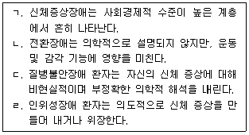
- ㄱ, ㄴ
- ㄱ, ㄷ
- ㄴ, ㄷ
- ㄷ, ㄹ
- ㄴ, ㄷ, ㄹ
(정답률: 알수없음)
95. DSM-5의 변태성욕장애의 하위 유형과 특징에 관한 설명으로 옳은 것은?
- 관음장애: 이성의 옷으로 바꿔 입음으로써 성적으로 흥분함
- 물품음란장애: 무생물에 대해 성적 흥분을 느낌
- 성적피학장애: 상대방이 굴욕이나 고통을 겪게 함으로써 성적 흥분을 느낌
- 마찰도착장애: 눈치 채지 못한 사람에게 성기를 노출하여 성적으로 흥분함
- 노출장애: 사춘기 이전의 아동을 상대로 최소 3개월 이상 성적 흥분을 느낌
(정답률: 알수없음)
96. DSM-5의 신체변형(이형)장애에 관한 설명으로 옳지 않은 것은?
- 하나 이상의 신체 결함에 과도하게 집착한다.
- 자기 얼굴의 미묘한 비대칭성을 발견한다.
- 외모에 대한 높은 미적 민감성을 가진다.
- 타인의 정서적 학대 및 무시와는 무관하다.
- 성형수술을 원하는 경향이 있다.
(정답률: 알수없음)
97. DSM-5의 수면-각성장애의 하위 유형과 특징에 관한 설명으로 옳은 것은?
- 불면장애: 과도한 수면 시간에도 불구하고 각성의 질 저하와 수면 무력증과 같은 증상을 보임
- 기면증: 수면을 개시하는 과정에서 어려움을 보이며, 수면의 양과 질이 불만족스러운 상태
- 과다수면장애: 주간에 깨어 있는 상태에서 갑자기 저항할 수 없는 졸음을 느끼며 수면에 빠짐
- 중추성 수면무호흡증: 수면다원검사에서 수면 시간당 5회 이상의 중추성 무호흡이 나타남
- 악몽장애: 수면 중 다리에 불쾌한 감각을 동반하며, 다리를 움직이고 싶은 충동과 관련 있음
(정답률: 알수없음)
98. DSM-5의 편집성 성격장애에 관한 설명으로 옳지 않은 것은?
- 타인의 동기를 악의적으로 해석한다.
- 다른 사람에게 자신의 비밀을 털어놓지 않는다.
- 절도 등의 불법적인 일을 지속적으로 실행한다.
- 타인에게 모욕을 받았다고 느끼면 즉시 반격한다.
- 지속적으로 원한을 품는다.
(정답률: 알수없음)
99. A가 겪고 있는 정신장애에 관한 DSM-5 진단 기준과 설명으로 옳지 않은 것은?
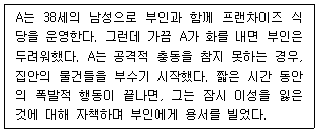
- 재산 피해 또는 상해 등을 가하는 폭발적 행동이 12개월 이내에 3회 발생한다.
- 언어적 공격이 6개월 동안 평균 일주일에 3번 정도 발생한다.
- 6세 이상에서 나타난다.
- 반복적 폭발은 개인의 직업적 기능에 손상을 가져온다.
- 실제 상황에서 보통 30분 이내로 나타난다.
(정답률: 알수없음)
100. DSM-5의 신경성 폭식증 진단 기준에 해당하는 것을 모두 고른 것은?
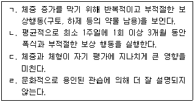
- ㄱ, ㄴ
- ㄱ, ㄹ
- ㄴ, ㄷ
- ㄱ, ㄴ, ㄷ
- ㄴ, ㄷ, ㄹ
(정답률: 알수없음)